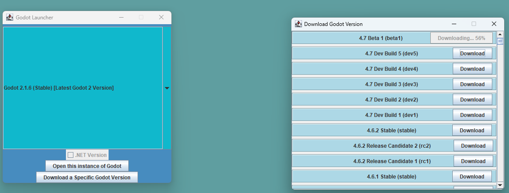
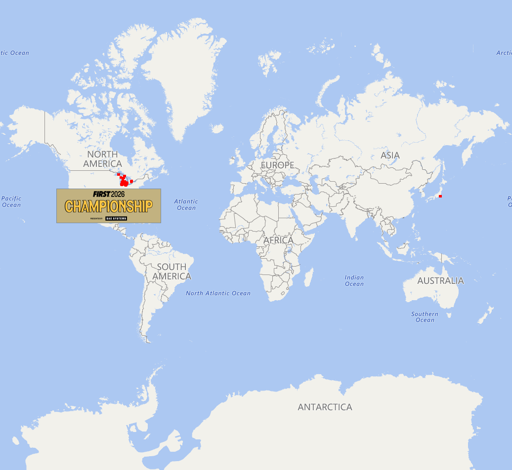
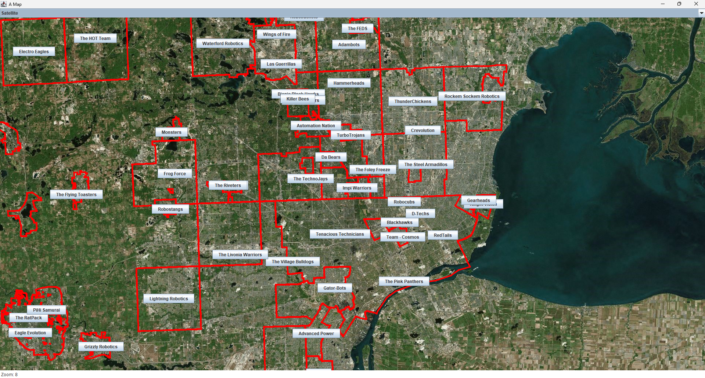

This is a basic application you can use to hold, run, and download various Godot Engines.
View RepositoryThis is actually an API based project that grabs a Pokémon and can calculate experience needed to get to a certain level.
View Repository

This is meant to show approximately where FRC teams are located, alongside a button to show where they're located, it uses some JSON within it.
View RepositoryThis was my attempt at making a fully functional Operating System within the Godot Game Engine. It actually comes with a few things, such as an internet browser, a music player, a painting app, and more
View RepositoryThis is a currently work in progress attempt at making a fully 3D Operating System within the Godot Game Engine, it'll likely expand a bit more on my other OS PainOS
View RepositoryDespite this being a fork, this was a Robot that I helped program, I mainly did the climber, but it still works.
View RepositoryI actually created this year's robot code, I just hosted it on an organization. What I primarily worked on was some documentation, but also the LEDs on the robot that likely never got used.
View Repository